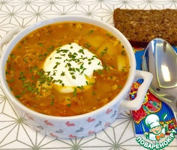

Щи "Мамины"
Информация взята с сайта: www.povarenok.ru
Описание: Не спешите бросать тапки! Я понимаю, что рецептов щи на сайте вагон и маленькая тележка! Но я искренне полюбила этот рецепт за минимум ингредиентов, простоту, а главное - вкус детства! Этот рецепт дала мне мама моего любимого, когда мы только начали с ним вместе жить и я всячески хотела угодить суженому в питании!) Когда приготовила впервые-вспомнила, что такие щи давали нам в садике! В общем надеюсь кому-нибудь супчик пригодится, ведь он правда безумно вкусный.
Время приготовления: 60 минут
Ингредиенты для "Щи "Мамины":
- Свинина — 300 г
- Капуста квашеная — 200 г
- Морковь — 1 шт
- Лук репчатый — 1 шт
- Томатная паста — 2 ст. л.
- Картофель — 2 шт
- Специи
Рецепт "Щи "Мамины"":
Щи, как и любой суп, я всегда варю на бульоне. У каждой хозяйки свои рецепты мясного бульона, так что варите такой и так, как любите Вы и Ваша семья. Лично я никогда не гружу себе этим голову и просто варю кусок свинины с лавровым листом и перцем-горошком до готовности, снимая пену.
За это время мы чистим и трем морковь, чищеный лук мелко шинкуем. Обжариваем на небольшом количестве растительного масла на среднем огне пару минут.
Добавляем томатную пасту, солим-перчим по вкусу, перемешиваем, закрываем крышкой и тушим на небольшом огне минут 5-7.
За это время достаем мясо и в бульон кладем капусту. Мы любим покислее, поэтому я дополнительно еще выжимаю немного сока из капусты в кастрюлю. Так что Вы сами регулируйте как Вы любите.
Картофель чистим и режем некрупными кусочками.
Кладем в суп нашу зажарку, картофель и мелко нарезанное мяско, Солим-перчим по вкусу. Я всегда добавляю еще сушеную петрушку и немного майорана. Варим на медленном огне минут 30-40 в зависимости от того, какую Вы любите капусточку в супе: хрустящую или не очень.
Подаем наш супчик со сметанкой!
Приятного аппетита!!!
Источник: www.povarenok.ru

{kind=link}
{kind=link}
{kind=link}
{kind=link}
{kind=link}
{kind=link}
{kind=link}